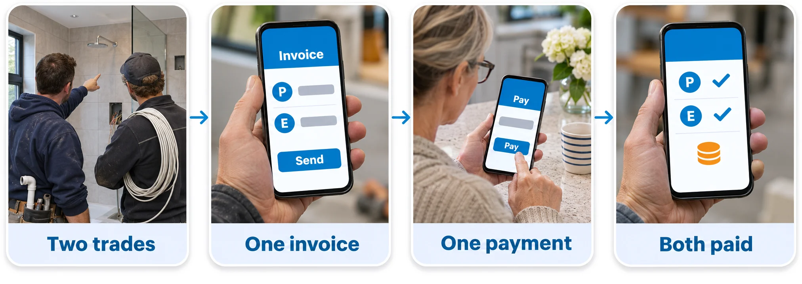
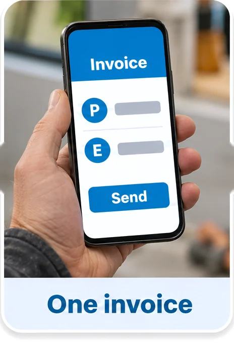

Shared Job Invoice





- Problem
- When a job needs a second trade, I either pay him out of my pocket or lose the job.
- Who has it
- Solo providers who bring in other trades.
- What people say
- “The customer wants a price for the entire job.” Contractor on Reddit, r/Contractor, 2025-12-03
 Open the post
Open the post